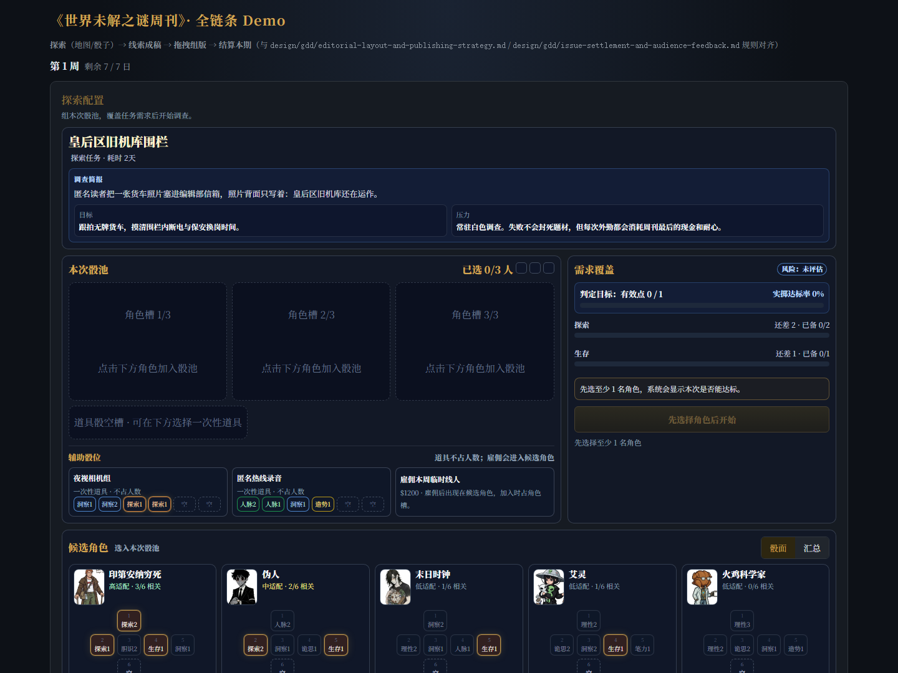
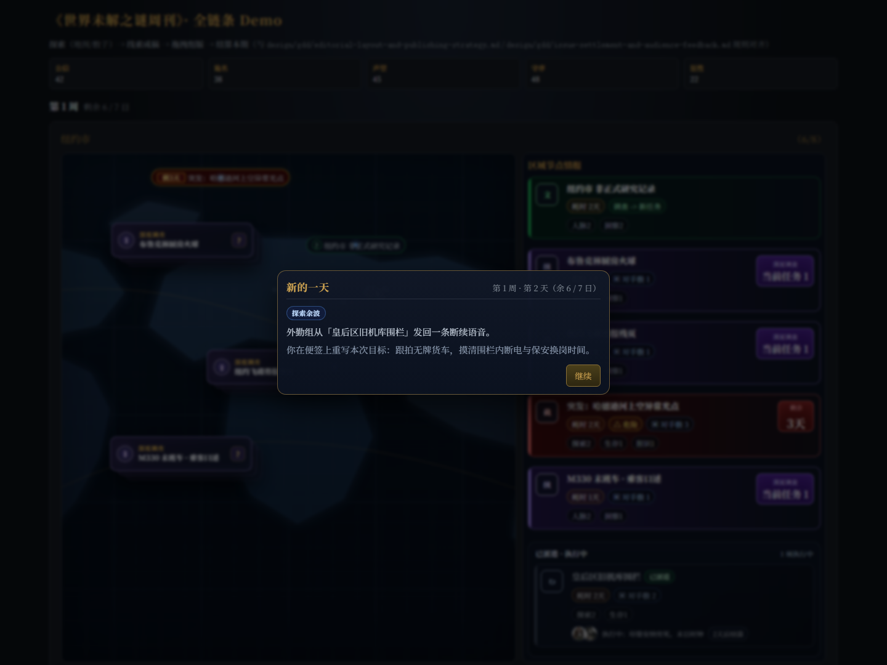
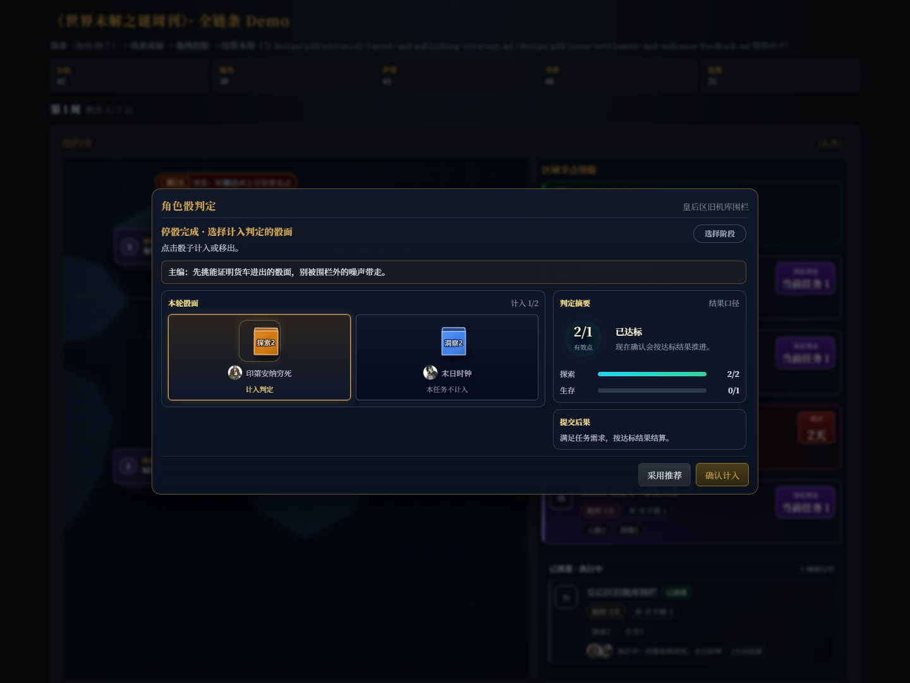
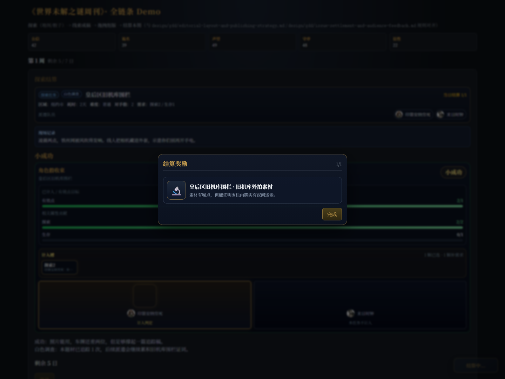

01 派遣简报
派遣配置页顶部新增调查简报、目标和压力，让任务在组骰池前就有具体报道语境。

覆盖派遣简报、每日探索余波、判定现场对白、结算线索奖励四个玩家真实会经过的状态。
派遣配置页顶部新增调查简报、目标和压力，让任务在组骰池前就有具体报道语境。

每日弹窗保留普通文本池，同时少量概率显示与执行中任务相关的探索余波。

骰子判定弹窗增加短对白，和摇骰 / 选择计入阶段绑定，后续重投接入时复用这个槽位。

结算奖励不再只显示通用 Tier 文案，而是使用任务专属线索标题和描述。
